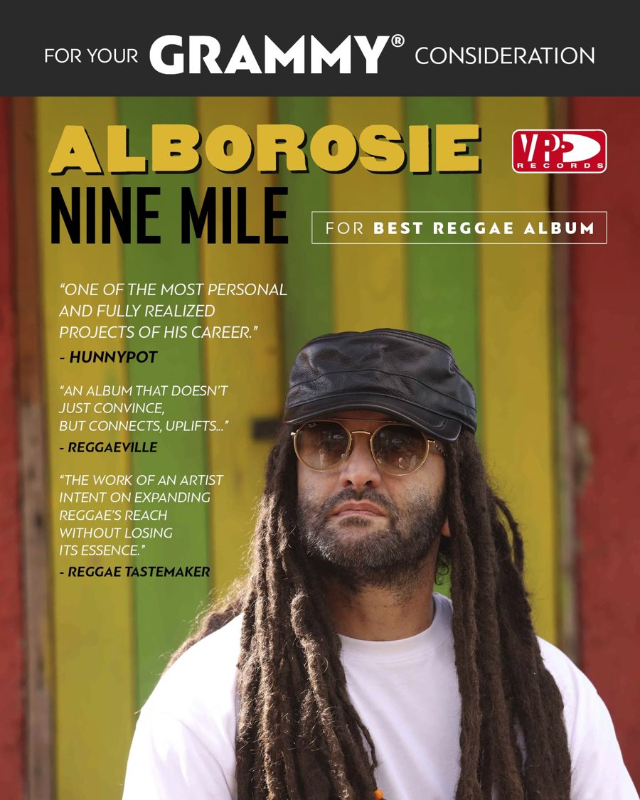

Alborosie's Nine Mile makes its GRAMMY push
VP Records has put the album up for consideration for Best Reggae Album, and Alborosie and the Shengen Clan bring the songs to Portland's The Get Down on Tuesday, October 20.


Alborosie's ninth studio album, Nine Mile, is now in the running for the biggest prize in the genre. VP Records has launched a "For Your GRAMMY Consideration" campaign submitting the record for Best Reggae Album.
Released on VP/Greensleeves Records, Nine Mile takes its name from the village in St. Ann, Jamaica, where Bob Marley was born. Alborosie has said the birthplace "gives it a mystical energy," and he describes the record as "a journey within the magic of Jamaica, the culture, the traditions, the sound."
"Search for that Nine Mile place within yourself."Alborosie, on the album's message (VP Records)
Made in Kingston
The Italian-born, Kingston-based artist wrote, produced and engineered the album at his own Shengen Studio, playing nearly every part himself. Aston Barrett Jr. adds drums and bass on select tracks. The album opens with "Calling Selassie," built on Nyabinghi drums and horns, and moves through "Trench Town Legend," a tribute to reggae's birthplace, and "Come My Way," a lovers rock reworking of an Augustus Pablo production. "Ipanema" and "Ganas De Verte" bring in Brazilian sounds, and the title track closes the record in an acoustic version.
What the critics said
VP's campaign leans on strong reviews. Hunnypot called it "one of the most personal and fully realized projects of his career." Reggaeville wrote that it is "an album that doesn't just convince, but connects, uplifts." Reggae Tastemaker heard "the work of an artist intent on expanding reggae's reach without losing its essence."
See it live in Portland
Alborosie and the Shengen Clan bring the "Nine Mile" US Club Tour to The Get Down in Portland on Tuesday, October 20, at 8 PM, before heading to Boise on October 21. If you want to hear why VP is pushing this one, this is the night.
Nine Mile at a glance
- Artist: Alborosie
- Label: VP/Greensleeves Records
- Recorded: Shengen Studio, Kingston, Jamaica
- GRAMMY consideration: Best Reggae Album
- Live: The Get Down, Portland · Tue, Oct 20 · 8 PM
More shows this season: Reggae shows worth the trip in Oregon this fall.